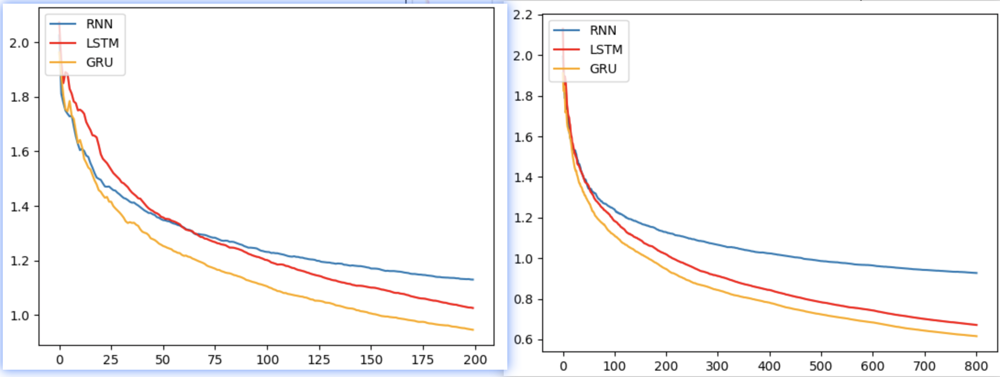
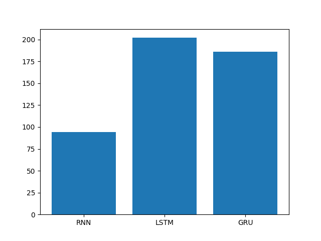
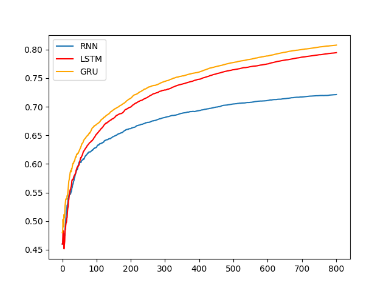

5 RNN案例 人名分类器
学习目标¶
- 了解有关人名分类问题和有关数据.
- 掌握使用RNN构建人名分类器实现过程.
1 案例介绍¶
-
关于人名分类问题:
以一个人名为输入, 使用模型帮助我们判断它最有可能是来自哪一个国家的人名, 这在某些国际化公司的业务中具有重要意义, 在用户注册过程中, 会根据用户填写的名字直接给他分配可能的国家或地区选项, 以及该国家或地区的国旗, 限制手机号码位数等等.
-
人名分类数据预览
-
数据存放路径：$(home)/data/name_classfication.txt
- 数据格式说明 每一行第一个单词为人名，第二个单词为国家名。中间用制表符tab分割
Huffmann German
Hummel German
Hummel German
Hutmacher German
Ingersleben German
Jaeger German
Jager German
Deng Chinese
Ding Chinese
Dong Chinese
Dou Chinese
Duan Chinese
Eng Chinese
Fan Chinese
Fei Chinese
Abaimov Russian
Abakeliya Russian
Abakovsky Russian
Abakshin Russian
Abakumoff Russian
Abakumov Russian
Abakumtsev Russian
Abakushin Russian
Abalakin Russian
2 案例步骤¶
整个案例的实现可分为以下五个步骤
- 第一步导入必备的工具包
- 第二步对data文件中的数据进行处理，满足训练要求
- 第三步构建RNN模型(包括传统RNN, LSTM以及GRU)
- 第四步构建训练函数并进行训练
- 第五步构建预测函数并进行预测
2.1 导入必备的工具包¶
# 导入torch工具
import torch
# 导入nn准备构建模型
import torch.nn as nn
import torch.nn.functional as F
import torch.optim as optim
# 导入torch的数据源 数据迭代器工具包
from torch.utils.data import Dataset, DataLoader
# 用于获得常见字母及字符规范化
import string
# 导入时间工具包
import time
# 引入制图工具包
import matplotlib.pyplot as plt
# 从io中导入文件打开方法
from io import open
2.2 数据预处理¶
这里需要对data文件中的数据进行处理，满足训练要求。
1 获取常用的字符数量¶
# 获取所有常用字符包括字母和常用标点
all_letters = string.ascii_letters + " .,;'"
# 获取常用字符数量
n_letters = len(all_letters)
print("n_letter:", n_letters)
- 输出效果:
n_letter: 57
2 国家名种类数和个数¶
# 国家名 种类数
categorys = ['Italian', 'English', 'Arabic', 'Spanish', 'Scottish', 'Irish', 'Chinese', 'Vietnamese', 'Japanese',
'French', 'Greek', 'Dutch', 'Korean', 'Polish', 'Portuguese', 'Russian', 'Czech', 'German']
# 国家名 个数
categorynum = len(categorys)
print('categorys--->', categorys)
- 输出效果:
categorys---> ['Italian', 'English', 'Arabic', 'Spanish', 'Scottish', 'Irish', 'Chinese', 'Vietnamese', 'Japanese', 'French', 'Greek', 'Dutch', 'Korean', 'Polish', 'Portuguese', 'Russian', 'Czech', 'German']
categorynum---> 18
3 读数据到内存¶
# 思路分析
# 1 打开数据文件 open(filename, mode='r', encoding='utf-8')
# 2 按行读文件、提取样本x 样本y line.strip().split('\t')
# 3 返回样本x的列表、样本y的列表 my_list_x, my_list_y
def read_data(filename):
my_list_x, my_list_y= [], []
# 打开文件
with open(filename, mode='r', encoding='utf-8') as f:
# 按照行读数据
for line in f.readlines():
if len(line) <= 5:
continue
# 按照行提取样本x 样本y
(x, y) = line.strip().split('\t')
my_list_x.append(x)
my_list_y.append(y)
# 打印样本的数量
print('my_list_x->', len(my_list_x))
print('my_list_y->', len(my_list_y))
# 返回样本x的列表、样本y的列表
return my_list_x, my_list_y
4 构建数据源NameClassDataset¶
# 原始数据 -> 数据源NameClassDataset --> 数据迭代器DataLoader
# 构造数据源 NameClassDataset，把语料转换成x y
# 1 init函数 设置样本x和y self.my_list_x self.my_list_y 条目数self.sample_len
# 2 __len__(self)函数 获取样本条数
# 3 __getitem__(self, index)函数 获取第几条样本数据
# 按索引 获取数据样本 x y
# 样本x one-hot张量化 tensor_x[li][all_letters.find(letter)] = 1
# 样本y 张量化 torch.tensor(categorys.index(y), dtype=torch.long)
# 返回tensor_x, tensor_y
class NameClassDataset(Dataset):
def __init__(self, my_list_x, my_list_y):
# 样本x
self.my_list_x = my_list_x
# 样本y
self.my_list_y = my_list_y
# 样本条目数
self.sample_len = len(my_list_x)
# 获取样本条数
def __len__(self):
return self.sample_len
# 获取第几条 样本数据
def __getitem__(self, index):
# 对index异常值进行修正 [0, self.sample_len-1]
index = min(max(index, 0), self.sample_len-1)
# 按索引获取 数据样本 x y
x = self.my_list_x[index]
y = self.my_list_y[index]
# 样本x one-hot张量化
tensor_x = torch.zeros(len(x), n_letters)
# 遍历人名 的 每个字母 做成one-hot编码
for li, letter in enumerate(x):
# letter2indx 使用all_letters.find(letter)查找字母在all_letters表中的位置 给one-hot赋值
tensor_x[li][all_letters.find(letter)] = 1
# 样本y 张量化
tensor_y = torch.tensor(categorys.index(y), dtype=torch.long)
# 返回结果
return tensor_x, tensor_y
- 分析
- 文本张量化，这里也就是人名张量化是通过one-hot编码来完成。
# 将字符串(单词粒度)转化为张量表示，如："ab" --->
# tensor([[[1., 0., 0., 0., 0., 0., 0., 0., 0., 0., 0., 0., 0., 0., 0., 0., 0.,
# 0., 0., 0., 0., 0., 0., 0., 0., 0., 0., 0., 0., 0., 0., 0., 0., 0.,
# 0., 0., 0., 0., 0., 0., 0., 0., 0., 0., 0., 0., 0., 0., 0., 0., 0.,
# 0., 0., 0., 0., 0., 0.]],
# [[0., 1., 0., 0., 0., 0., 0., 0., 0., 0., 0., 0., 0., 0., 0., 0., 0.,
# 0., 0., 0., 0., 0., 0., 0., 0., 0., 0., 0., 0., 0., 0., 0., 0., 0.,
# 0., 0., 0., 0., 0., 0., 0., 0., 0., 0., 0., 0., 0., 0., 0., 0., 0.,
# 0., 0., 0., 0., 0., 0.]]])
5 构建迭代器遍历数据¶
def dm_test_NameClassDataset():
# 1 获取数据
myfilename = './data/name_classfication.txt'
my_list_x, my_list_y = read_data(myfilename)
print('my_list_x length', len(my_list_x))
print('my_list_y length', len(my_list_y))
# 2 实例化dataset对象
nameclassdataset = NameClassDataset(my_list_x, my_list_y)
# 3 实例化dataloader
mydataloader = DataLoader(dataset=nameclassdataset, batch_size=1, shuffle=True)
for i, (x, y) in enumerate (mydataloader):
print('x.shape', x.shape, x)
print('y.shape', y.shape, y)
break
- 输出效果:
my_list_x length 20074
my_list_y length 20074
x.shape torch.Size([1, 5, 57]) tensor([[[0., 0., 0., 0., 0., 0., 0., 0., 0., 0., 0., 0., 0., 0., 0., 0., 0.,
0., 0., 0., 0., 0., 0., 0., 0., 0., 1., 0., 0., 0., 0., 0., 0., 0.,
0., 0., 0., 0., 0., 0., 0., 0., 0., 0., 0., 0., 0., 0., 0., 0., 0.,
0., 0., 0., 0., 0., 0.],
[0., 1., 0., 0., 0., 0., 0., 0., 0., 0., 0., 0., 0., 0., 0., 0., 0.,
0., 0., 0., 0., 0., 0., 0., 0., 0., 0., 0., 0., 0., 0., 0., 0., 0.,
0., 0., 0., 0., 0., 0., 0., 0., 0., 0., 0., 0., 0., 0., 0., 0., 0.,
0., 0., 0., 0., 0., 0.],
[1., 0., 0., 0., 0., 0., 0., 0., 0., 0., 0., 0., 0., 0., 0., 0., 0.,
0., 0., 0., 0., 0., 0., 0., 0., 0., 0., 0., 0., 0., 0., 0., 0., 0.,
0., 0., 0., 0., 0., 0., 0., 0., 0., 0., 0., 0., 0., 0., 0., 0., 0.,
0., 0., 0., 0., 0., 0.],
[0., 0., 0., 0., 0., 0., 0., 0., 0., 0., 0., 0., 0., 0., 0., 0., 0.,
0., 0., 0., 0., 0., 0., 0., 0., 1., 0., 0., 0., 0., 0., 0., 0., 0.,
0., 0., 0., 0., 0., 0., 0., 0., 0., 0., 0., 0., 0., 0., 0., 0., 0.,
0., 0., 0., 0., 0., 0.],
[1., 0., 0., 0., 0., 0., 0., 0., 0., 0., 0., 0., 0., 0., 0., 0., 0.,
0., 0., 0., 0., 0., 0., 0., 0., 0., 0., 0., 0., 0., 0., 0., 0., 0.,
0., 0., 0., 0., 0., 0., 0., 0., 0., 0., 0., 0., 0., 0., 0., 0., 0.,
0., 0., 0., 0., 0., 0.]]])
y.shape torch.Size([1]) tensor([15])
2.3 构建RNN模型¶
1 构建RNN模型¶
# RNN类 实现思路分析：
# 1 init函数 准备三个层 self.rnn self.linear self.softmax=nn.LogSoftmax(dim=-1)
# def __init__(self, input_size, hidden_size, output_size, num_layers=1)
# 2 forward(input, hidden)函数
# 让数据经过三个层 返回softmax结果和hn
# 形状变化 [seqlen,1,57],[1,1,128]) -> [seqlen,1,128],[1,1,128]
# 3 初始化隐藏层输入数据 inithidden()
# 形状[self.num_layers, 1, self.hidden_size]
class RNN(nn.Module):
def __init__(self, input_size, hidden_size, output_size, num_layers=1):
super(RNN, self).__init__()
# 1 init函数 准备三个层 self.rnn self.linear self.softmax=nn.LogSoftmax(dim=-1)
self.input_size = input_size
self.hidden_size = hidden_size
self.output_size = output_size
self.num_layers = num_layers
# 定义rnn层
self.rnn = nn.RNN(self.input_size, self.hidden_size, self.num_layers)
# 定义linear层
self.linear = nn.Linear(self.hidden_size, self.output_size)
# 定义softmax层
self.softmax = nn.LogSoftmax(dim=-1)
def forward(self, input, hidden):
'''input [6,57]-2维矩阵 hidden[1,1,57] - 3维矩阵'''
# 数据形状 [6,57] -> [6,1,57]
input = input.unsqueeze(1)
# 1 数据经过模型 提取事物特征
# 数据形状 [seqlen,1,57],[1,1,128]) -> [seqlen,1,18],[1,1,128]
rr, hn = self.rnn(input, hidden)
# 数据形状 [seqlen,1,128] - [1, 128] eg:[6,1,128] --> [1,128]
tmprr = rr[-1]
# 2 数据经过全连接层 [1,128] -->[1,18]
tmprr = self.linear(tmprr)
# 3 数据经过softmax层返回
return self.softmax(tmprr), hn
def inithidden(self):
# 初始化隐藏层输入数据 inithidden()
return torch.zeros(self.num_layers, 1,self.hidden_size)
- torch.unsqueeze演示:
>>> x = torch.tensor([1, 2, 3, 4])
>>> torch.unsqueeze(x, 0)
tensor([[ 1, 2, 3, 4]])
>>> torch.unsqueeze(x, 1)
tensor([[ 1],
[ 2],
[ 3],
[ 4]])
- 调用:
def dm01_test_myrnn():
# 1 实例化rnn对象
myrnn = RNN(57, 128, 18)
print('myrnn--->', myrnn)
# 2 准备数据
input = torch.randn(6, 57)
print(input.shape)
hidden = myrnn.inithidden()
# 3 给模型1次性的送数据
# [seqlen, 57], [1, 1, 128]) -> [1,18], [1,1,128]
output, hidden = myrnn(input, hidden)
print('一次性的送数据：output->', output.shape, output)
print('hidden->', hidden.shape)
# 4 给模型1个字符1个字符的喂数据
hidden = myrnn.inithidden()
for i in range(input.shape[0]):
tmpinput = input[i].unsqueeze(0)
output, hidden = myrnn(tmpinput, hidden)
# 最后一次ouput
print('一个字符一个字符的送数据output->', output.shape, output)
- 调用结果:
myrnn---> RNN(
(rnn): RNN(57, 128)
(linear): Linear(in_features=128, out_features=18, bias=True)
(softmax): LogSoftmax(dim=-1)
)
torch.Size([6, 57])
一次性的送数据：output-> torch.Size([1, 18]) tensor([[-2.8194, -3.1730, -3.3112, -2.9715, -3.0997, -2.8097, -2.8016, -2.8738,
-2.7229, -2.8181, -2.7881, -3.0218, -2.9169, -2.6193, -2.8507, -2.9684,
-2.8589, -2.8273]], grad_fn=<LogSoftmaxBackward0>)
hidden-> torch.Size([1, 1, 128])
一个字符一个字符的送数据output-> torch.Size([1, 18]) tensor([[-2.8194, -3.1730, -3.3112, -2.9715, -3.0997, -2.8097, -2.8016, -2.8738,
-2.7229, -2.8181, -2.7881, -3.0218, -2.9169, -2.6193, -2.8507, -2.9684,
-2.8589, -2.8273]], grad_fn=<LogSoftmaxBackward0>)
2 构建LSTM模型¶
# LSTM类 实现思路分析：
# 1 init函数 准备三个层 self.rnn self.linear self.softmax=nn.LogSoftmax(dim=-1)
# def __init__(self, input_size, hidden_size, output_size, num_layers=1)
# 2 forward(input, hidden)函数
# 让数据经过三个层 返回softmax结果和hn
# 形状变化 [seqlen,1,57],[1,1,128]) -> [seqlen,1,128],[1,1,128]
# 3 初始化隐藏层输入数据 inithidden()
# 形状[self.num_layers, 1, self.hidden_size]
class LSTM(nn.Module):
def __init__(self, input_size, hidden_size, output_size, num_layers=1):
super(LSTM, self).__init__()
# 1 init函数 准备三个层 self.rnn self.linear self.softmax=nn.LogSoftmax(dim=-1)
self.input_size = input_size
self.hidden_size = hidden_size
self.output_size = output_size
self.num_layers = num_layers
# 定义rnn层
self.rnn = nn.LSTM(self.input_size, self.hidden_size, self.num_layers)
# 定义linear层
self.linear = nn.Linear(self.hidden_size, self.output_size)
# 定义softmax层
self.softmax = nn.LogSoftmax(dim=-1)
def forward(self, input, hidden, c):
# 让数据经过三个层 返回softmax结果和 hn c
# 数据形状 [6,57] -> [6,1,52]
input = input.unsqueeze(1)
# 把数据送给模型 提取事物特征
# 数据形状 [seqlen,1,57],[1,1,128], [1,1,128]) -> [seqlen,1,18],[1,1,128],[1,1,128]
rr, (hn, cn) = self.rnn(input, (hidden, c))
# 数据形状 [seqlen,1,128] - [1, 128]
tmprr = rr[-1]
tmprr = self.linear(tmprr)
return self.softmax(tmprr), hn, cn
def inithidden(self):
# 初始化隐藏层输入数据 inithidden()
hidden = c = torch.zeros(self.num_layers, 1, self.hidden_size)
return hidden, c
3 构建GRU模型¶
# GRU类 实现思路分析：
# 1 init函数 准备三个层 self.rnn self.linear self.softmax=nn.LogSoftmax(dim=-1)
# def __init__(self, input_size, hidden_size, output_size, num_layers=1)
# 2 forward(input, hidden)函数
# 让数据经过三个层 返回softmax结果和hn
# 形状变化 [seqlen,1,57],[1,1,128]) -> [seqlen,1,128],[1,1,128]
# 3 初始化隐藏层输入数据 inithidden()
# 形状[self.num_layers, 1, self.hidden_size]
class GRU(nn.Module):
def __init__(self, input_size, hidden_size, output_size, num_layers=1):
super(GRU, self).__init__()
# 1 init函数 准备三个层 self.rnn self.linear self.softmax=nn.LogSoftmax(dim=-1)
self.input_size = input_size
self.hidden_size = hidden_size
self.output_size = output_size
self.num_layers = num_layers
# 定义rnn层
self.rnn = nn.GRU(self.input_size, self.hidden_size, self.num_layers)
# 定义linear层
self.linear = nn.Linear(self.hidden_size, self.output_size)
# 定义softmax层
self.softmax = nn.LogSoftmax(dim=-1)
def forward(self, input, hidden):
# 让数据经过三个层 返回softmax结果和hn
# 数据形状 [6,57] -> [6,1,52]
input = input.unsqueeze(1)
# 把数据送给模型 提取事物特征
# 数据形状 [seqlen,1,57],[1,1,128]) -> [seqlen,1,18],[1,1,128]
rr, hn = self.rnn(input, hidden)
# 数据形状 [seqlen,1,128] - [1, 128]
tmprr = rr[-1]
tmprr = self.linear(tmprr)
return self.softmax(tmprr), hn
def inithidden(self):
# 初始化隐藏层输入数据 inithidden()
return torch.zeros(self.num_layers, 1,self.hidden_size)
4 模型RNN_LSTM_GRU测试¶
def dm_test_rnn_lstm_gru():
# one-hot编码特征57（n_letters），也是RNN的输入尺寸
input_size = 57
# 定义隐层的最后一维尺寸大小
n_hidden = 128
# 输出尺寸为语言类别总数n_categories # 1个字符预测成18个类别
output_size = 18
# 1 获取数据
myfilename = './data/name_classfication.txt'
my_list_x, my_list_y = read_data(myfilename)
print('categorys--->', categorys)
# 2 实例化dataset对象
nameclassdataset = NameClassDataset(my_list_x, my_list_y)
# 3 实例化dataloader
mydataloader = DataLoader(dataset=nameclassdataset, batch_size=1, shuffle=True)
my_rnn = RNN(n_letters, n_hidden, categorynum)
my_lstm = LSTM(n_letters, n_hidden, categorynum)
my_gru = GRU(n_letters, n_hidden, categorynum)
print('rnn 模型', my_rnn)
print('lstm 模型', my_lstm)
print('gru 模型', my_gru)
for i, (x, y) in enumerate (mydataloader):
# print('x.shape', x.shape, x)
# print('y.shape', y.shape, y)
# 初始化一个三维的隐层0张量, 也是初始的细胞状态张量
output, hidden = my_rnn(x[0], my_rnn.inithidden())
print("rnn output.shape--->:", output.shape, output)
if (i == 0):
break
for i, (x, y) in enumerate (mydataloader):
# print('x.shape', x.shape, x)
# print('y.shape', y.shape, y)
hidden, c = my_lstm.inithidden()
output, hidden, c = my_lstm(x[0], hidden, c)
print("lstm output.shape--->:", output.shape, output)
if (i == 0):
break
for i, (x, y) in enumerate (mydataloader):
# print('x.shape', x.shape, x)
# print('y.shape', y.shape, y)
output, hidden = my_gru(x[0], my_gru.inithidden())
print("gru output.shape--->:", output.shape, output)
if (i == 0):
break
- 输出效果:
rnn 模型 RNN(
(rnn): RNN(57, 128)
(linear): Linear(in_features=128, out_features=18, bias=True)
(softmax): LogSoftmax(dim=-1)
)
lstm 模型 LSTM(
(rnn): LSTM(57, 128)
(linear): Linear(in_features=128, out_features=18, bias=True)
(softmax): LogSoftmax(dim=-1)
)
gru 模型 GRU(
(rnn): GRU(57, 128)
(linear): Linear(in_features=128, out_features=18, bias=True)
(softmax): LogSoftmax(dim=-1)
)
rnn output.shape--->: torch.Size([1, 18]) tensor([[-2.9552, -2.9024, -2.8828, -2.7737, -2.8387, -3.0154, -2.8587, -2.9567,
-2.8406, -3.0098, -2.8152, -2.8472, -2.9561, -2.8780, -2.8332, -2.8117,
-2.9560, -2.9384]], grad_fn=<LogSoftmaxBackward0>)
lstm output.shape--->: torch.Size([1, 18]) tensor([[-2.9283, -3.0017, -2.8902, -2.8179, -2.8484, -2.8152, -2.9654, -2.8846,
-2.8642, -2.8602, -2.8860, -2.9505, -2.8806, -2.9436, -2.8388, -2.9312,
-2.9241, -2.8211]], grad_fn=<LogSoftmaxBackward0>)
gru output.shape--->: torch.Size([1, 18]) tensor([[-2.8898, -3.0236, -2.7403, -2.8986, -2.8163, -2.9486, -2.8674, -2.9294,
-2.8889, -3.0082, -2.8785, -2.8741, -2.8736, -2.7923, -2.9261, -2.8990,
-2.9456, -2.8668]], grad_fn=<LogSoftmaxBackward0>)
2.4 构建训练函数并进行训练¶
1 构建RNN训练函数¶
# 思路分析
# 从文件获取数据、实例化数据源对象nameclassdataset 数据迭代器对象mydataloader
# 实例化模型对象my_rnn 损失函数对象mycrossentropyloss=nn.NLLLoss() 优化器对象myadam
# 定义模型训练的参数
# starttime total_iter_num total_loss total_loss_list total_acc_num total_acc_list
# 外层for循环 控制轮数 for epoch_idx in range(epochs)
# 内层for循环 控制迭代次数 for i, (x, y) in enumerate(mydataloader)
# 给模型喂数据 # 计算损失 # 梯度清零 # 反向传播 # 梯度更新
# 计算辅助信息 # 累加总损失和准确数 每100次训练计算一个总体平均损失 总体平均准确率 每2000次训练 打印日志
# 其他 # 预测对错 i_predit_tag = (1 if torch.argmax(output).item() == y.item() else 0)
# 模型保存
# torch.save(my_rnn.state_dict(), './my_rnn_model_%d.bin' % (epoch_idx + 1))
# 返回 平均损失列表total_loss_list, 时间total_time, 平均准确total_acc_list
# 模型训练参数
mylr = 1e-3
epochs = 1
def my_train_rnn():
# 获取数据
myfilename = './data/name_classfication.txt'
my_list_x, my_list_y = read_data(myfilename)
# 实例化dataset对象
nameclassdataset = NameClassDataset(my_list_x, my_list_y)
# 实例化 模型
input_size = 57
n_hidden = 128
output_size = 18
my_rnn = RNN(input_size, n_hidden, output_size)
print('my_rnn模型--->', my_rnn)
# 实例化 损失函数 adam优化器
mycrossentropyloss = nn.NLLLoss()
myadam = optim.Adam(my_rnn.parameters(), lr=mylr)
# 定义模型训练参数
starttime = time.time()
total_iter_num = 0 # 已训练的样本数
total_loss = 0.0 # 已训练的损失和
total_loss_list = [] # 每100个样本求一次平均损失 形成损失列表
total_acc_num = 0 # 已训练样本预测准确总数
total_acc_list = [] # 每100个样本求一次平均准确率 形成平均准确率列表
# 外层for循环 控制轮数
for epoch_idx in range(epochs):
# 实例化dataloader
mydataloader = DataLoader(dataset=nameclassdataset, batch_size=1, shuffle=True)
# 内层for循环 控制迭代次数
for i, (x, y) in enumerate(mydataloader):
# 给模型喂数据
output, hidden = my_rnn(x[0], my_rnn.inithidden())
# 计算损失
myloss = mycrossentropyloss(output, y)
# 梯度清零
myadam.zero_grad()
# 反向传播
myloss.backward()
# 梯度更新
myadam.step()
# 计算总损失
total_iter_num = total_iter_num + 1
total_loss = total_loss + myloss.item()
# 计算总准确率
i_predit_tag = (1 if torch.argmax(output).item() == y.item() else 0)
total_acc_num = total_acc_num + i_predit_tag
# 每100次训练 求一次平均损失 平均准确率
if (total_iter_num % 100 == 0):
tmploss = total_loss/total_iter_num
total_loss_list.append(tmploss)
tmpacc = total_acc_num/total_iter_num
total_acc_list.append(tmpacc)
# 每2000次训练 打印日志
if (total_iter_num % 2000 == 0):
tmploss = total_loss / total_iter_num
print('轮次:%d, 损失:%.6f, 时间:%d，准确率:%.3f' %(epoch_idx+1, tmploss, time.time() - starttime, tmpacc))
# 每个轮次保存模型
torch.save(my_rnn.state_dict(), './my_rnn_model_%d.bin' % (epoch_idx + 1))
# 计算总时间
total_time = int(time.time() - starttime)
return total_loss_list, total_time, total_acc_list
2 构建LSTM训练函数¶
# 思路分析
# 同RNN实现分析
def my_train_lstm():
# 获取数据
myfilename = './data/name_classfication.txt'
my_list_x, my_list_y = read_data(myfilename)
# 实例化dataset对象
nameclassdataset = NameClassDataset(my_list_x, my_list_y)
# 实例化 模型
input_size = 57
n_hidden = 128
output_size = 18
my_lstm = LSTM(input_size, n_hidden, output_size)
print('my_lstm模型--->', my_lstm)
# 实例化 损失函数 adam优化器
mycrossentropyloss = nn.NLLLoss()
myadam = optim.Adam(my_lstm.parameters(), lr=mylr)
# 定义模型训练参数
starttime = time.time()
total_iter_num = 0 # 已训练的样本数
total_loss = 0.0 # 已训练的损失和
total_loss_list = [] # 每100个样本求一次平均损失 形成损失列表
total_acc_num = 0 # 已训练样本预测准确总数
total_acc_list = [] # 每100个样本求一次平均准确率 形成平均准确率列表
# 外层for循环 控制轮数
for epoch_idx in range(epochs):
# 实例化dataloader
mydataloader = DataLoader(dataset=nameclassdataset, batch_size=1, shuffle=True)
# 内层for循环 控制迭代次数
for i, (x, y) in enumerate(mydataloader):
# 给模型喂数据
hidden, c = my_lstm.inithidden()
output, hidden, c = my_lstm(x[0], hidden, c)
# 计算损失
myloss = mycrossentropyloss(output, y)
# 梯度清零
myadam.zero_grad()
# 反向传播
myloss.backward()
# 梯度更新
myadam.step()
# 计算总损失
total_iter_num = total_iter_num + 1
total_loss = total_loss + myloss.item()
# 计算总准确率
i_predit_tag = (1 if torch.argmax(output).item() == y.item() else 0)
total_acc_num = total_acc_num + i_predit_tag
# 每100次训练 求一次平均损失 平均准确率
if (total_iter_num % 100 == 0):
tmploss = total_loss/total_iter_num
total_loss_list.append(tmploss)
tmpacc = total_acc_num/total_iter_num
total_acc_list.append(tmpacc)
# 每2000次训练 打印日志
if (total_iter_num % 2000 == 0):
tmploss = total_loss / total_iter_num
print('轮次:%d, 损失:%.6f, 时间:%d，准确率:%.3f' %(epoch_idx+1, tmploss, time.time() - starttime, tmpacc))
# 每个轮次保存模型
torch.save(my_lstm.state_dict(), './my_lstm_model_%d.bin' % (epoch_idx + 1))
# 计算总时间
total_time = int(time.time() - starttime)
return total_loss_list, total_time, total_acc_list
3 构建GRU训练函数¶
# 思路分析
# 同RNN实现分析
def my_train_gru():
# 获取数据
myfilename = './data/name_classfication.txt'
my_list_x, my_list_y = read_data(myfilename)
# 实例化dataset对象
nameclassdataset = NameClassDataset(my_list_x, my_list_y)
# 实例化 模型
input_size = 57
n_hidden = 128
output_size = 18
my_gru = GRU(input_size, n_hidden, output_size)
print('my_gru模型--->', my_gru)
# 实例化 损失函数 adam优化器
mycrossentropyloss = nn.NLLLoss()
myadam = optim.Adam(my_gru.parameters(), lr=mylr)
# 定义模型训练参数
starttime = time.time()
total_iter_num = 0 # 已训练的样本数
total_loss = 0.0 # 已训练的损失和
total_loss_list = [] # 每100个样本求一次平均损失 形成损失列表
total_acc_num = 0 # 已训练样本预测准确总数
total_acc_list = [] # 每100个样本求一次平均准确率 形成平均准确率列表
# 外层for循环 控制轮数
for epoch_idx in range(epochs):
# 实例化dataloader
mydataloader = DataLoader(dataset=nameclassdataset, batch_size=1, shuffle=True)
# 内层for循环 控制迭代次数
for i, (x, y) in enumerate(mydataloader):
# 给模型喂数据
output, hidden = my_gru(x[0], my_gru.inithidden())
# 计算损失
myloss = mycrossentropyloss(output, y)
# 梯度清零
myadam.zero_grad()
# 反向传播
myloss.backward()
# 梯度更新
myadam.step()
# 计算总损失
total_iter_num = total_iter_num + 1
total_loss = total_loss + myloss.item()
# 计算总准确率
i_predit_tag = (1 if torch.argmax(output).item() == y.item() else 0)
total_acc_num = total_acc_num + i_predit_tag
# 每100次训练 求一次平均损失 平均准确率
if (total_iter_num % 100 == 0):
tmploss = total_loss/total_iter_num
total_loss_list.append(tmploss)
tmpacc = total_acc_num/total_iter_num
total_acc_list.append(tmpacc)
# 每2000次训练 打印日志
if (total_iter_num % 2000 == 0):
tmploss = total_loss / total_iter_num
print('轮次:%d, 损失:%.6f, 时间:%d，准确率:%.3f' %(epoch_idx+1, tmploss, time.time() - starttime, tmpacc))
# 每个轮次保存模型
torch.save(my_gru.state_dict(), './my_gru_model_%d.bin' % (epoch_idx + 1))
# 计算总时间
total_time = int(time.time() - starttime)
return total_loss_list, total_time, total_acc_list
4 模型训练并制图¶
def dm_test_train_rnn_lstm_gru():
total_loss_list_rnn, total_time_rnn, total_acc_list_rnn = my_train_rnn()
total_loss_list_lstm, total_time_lstm, total_acc_list_lstm = my_train_lstm()
total_loss_list_gru, total_time_gru, total_acc_list_gru = my_train_gru()
# 绘制损失对比曲线
# 创建画布0
plt.figure(0)
# # 绘制损失对比曲线
plt.plot(total_loss_list_rnn, label="RNN")
plt.plot(total_loss_list_lstm, color="red", label="LSTM")
plt.plot(total_loss_list_gru, color="orange", label="GRU")
plt.legend(loc='upper left')
plt.savefig('./img/RNN_LSTM_GRU_loss2.png')
plt.show()
# 绘制柱状图
# 创建画布1
plt.figure(1)
x_data = ["RNN", "LSTM", "GRU"]
y_data = [total_time_rnn, total_time_lstm, total_time_gru]
# 绘制训练耗时对比柱状图
plt.bar(range(len(x_data)), y_data, tick_label=x_data)
plt.savefig('./img/RNN_LSTM_GRU_period2.png')
plt.show()
# 绘制准确率对比曲线
plt.figure(2)
plt.plot(total_acc_list_rnn, label="RNN")
plt.plot(total_acc_list_lstm, color="red", label="LSTM")
plt.plot(total_acc_list_gru, color="orange", label="GRU")
plt.legend(loc='upper left')
plt.savefig('./img/RNN_LSTM_GRU_acc2.png')
plt.show()
- RNN模型训练日志输出:
轮次:3, 损失:1.002102, 时间:54，准确率:0.700
轮次:3, 损失:0.993880, 时间:56，准确率:0.703
轮次:3, 损失:0.986200, 时间:58，准确率:0.705
轮次:3, 损失:0.981136, 时间:61，准确率:0.706
轮次:3, 损失:0.976931, 时间:63，准确率:0.707
轮次:3, 损失:0.972190, 时间:65，准确率:0.708
轮次:3, 损失:0.967081, 时间:68，准确率:0.710
轮次:3, 损失:0.964384, 时间:70，准确率:0.711
轮次:4, 损失:0.958782, 时间:72，准确率:0.713
轮次:4, 损失:0.955343, 时间:75，准确率:0.713
轮次:4, 损失:0.950741, 时间:77，准确率:0.715
轮次:4, 损失:0.945756, 时间:80，准确率:0.716
轮次:4, 损失:0.942663, 时间:82，准确率:0.717
轮次:4, 损失:0.939319, 时间:84，准确率:0.718
轮次:4, 损失:0.936169, 时间:87，准确率:0.719
轮次:4, 损失:0.933440, 时间:89，准确率:0.720
轮次:4, 损失:0.930918, 时间:91，准确率:0.720
轮次:4, 损失:0.927330, 时间:94，准确率:0.721
- LSTM模型训练日志输出:
轮次:3, 损失:0.805885, 时间:118，准确率:0.759
轮次:3, 损失:0.794148, 时间:123，准确率:0.762
轮次:3, 损失:0.783356, 时间:128，准确率:0.765
轮次:3, 损失:0.774931, 时间:133，准确率:0.767
轮次:3, 损失:0.765427, 时间:137，准确率:0.769
轮次:3, 损失:0.757254, 时间:142，准确率:0.771
轮次:3, 损失:0.750375, 时间:147，准确率:0.773
轮次:3, 损失:0.743092, 时间:152，准确率:0.775
轮次:4, 损失:0.732983, 时间:157，准确率:0.778
轮次:4, 损失:0.723816, 时间:162，准确率:0.780
轮次:4, 损失:0.716507, 时间:167，准确率:0.782
轮次:4, 损失:0.708377, 时间:172，准确率:0.785
轮次:4, 损失:0.700820, 时间:177，准确率:0.787
轮次:4, 损失:0.694714, 时间:182，准确率:0.788
轮次:4, 损失:0.688386, 时间:187，准确率:0.790
轮次:4, 损失:0.683056, 时间:191，准确率:0.791
轮次:4, 损失:0.677051, 时间:196，准确率:0.793
轮次:4, 损失:0.671668, 时间:201，准确率:0.794
- GRU模型训练日志输出:
轮次:3, 损失:0.743891, 时间:106，准确率:0.772
轮次:3, 损失:0.733144, 时间:111，准确率:0.775
轮次:3, 损失:0.723484, 时间:116，准确率:0.777
轮次:3, 损失:0.714760, 时间:120，准确率:0.780
轮次:3, 损失:0.706929, 时间:125，准确率:0.782
轮次:3, 损失:0.698657, 时间:130，准确率:0.784
轮次:3, 损失:0.690443, 时间:134，准确率:0.787
轮次:3, 损失:0.683878, 时间:139，准确率:0.789
轮次:4, 损失:0.674766, 时间:144，准确率:0.791
轮次:4, 损失:0.665543, 时间:148，准确率:0.794
轮次:4, 损失:0.657179, 时间:153，准确率:0.796
轮次:4, 损失:0.650314, 时间:157，准确率:0.798
轮次:4, 损失:0.643698, 时间:162，准确率:0.800
轮次:4, 损失:0.637341, 时间:167，准确率:0.802
轮次:4, 损失:0.632063, 时间:171，准确率:0.803
轮次:4, 损失:0.626060, 时间:176，准确率:0.805
轮次:4, 损失:0.621460, 时间:180，准确率:0.806
轮次:4, 损失:0.616704, 时间:185，准确率:0.808
5 模型训练结果分析¶
1 损失对比曲线分析¶

- 左图：1个轮次损失对比曲线，右图4个轮次损失对比曲线
- 模型训练的损失降低快慢代表模型收敛程度。由图可知, 传统RNN的模型第一个轮次开始收敛情况最好，然后是GRU, 最后是LSTM, 这是因为RNN模型简单参数少，见效快。随着训练数据的增加，GRU效果最好、LSTM效果次之、RNN效果排最后。
- 所以在以后的模型选用时， 要通过对任务的分析以及实验对比, 选择最适合的模型。
2 训练耗时分析¶
训练耗时对比图:

- 模型训练的耗时长短代表模型的计算复杂度，由图可知， 也正如我们之前的理论分析，传统RNN复杂度最低， 耗时几乎只是后两者的一半, 然后是GRU，最后是复杂度最高的LSTM。
3 训练准确率分析¶
训练准确率对比图:

- 由图可知， GRU效果最好、LSTM效果次之、RNN效果排最后。
4 结论¶
模型选用一般应通过实验对比，并非越复杂或越先进的模型表现越好，而是需要结合自己的特定任务，从对数据的分析和实验结果中获得最佳答案。
2.5 构建预测函数并进行预测¶
1 构建RNN预测函数¶
# 1 构建传统RNN预测函数
my_path_rnn = './model/my_rnn_model_1.bin'
my_path_lstm = './model/my_lstm_model_1.bin'
my_path_gru = './model/my_gru_model_1.bin'
# 将人名转化为onehot张量
# eg 'bai' --> [3,57]
def lineToTensor(x):
# 文本张量化x
tensor_x = torch.zeros(len(x), n_letters)
# 遍历这个人名中的每个字符索引和字符
for li, letter in enumerate(x):
# letter在字符串all_letters中的位置 就是onehot张量1索引的位置
# letter在字符串all_letters中的位置 使用字符串find()方法获取
tensor_x[li][all_letters.find(letter)] = 1
return tensor_x
# 思路分析
# 1 输入文本数据 张量化one-hot
# 2 实例化模型 加载已训练模型参数 m.load_state_dict(torch.load(my_path_rnn))
# 3 模型预测 with torch.no_grad()
# 4 从预测结果中取出前3名,显示打印结果 output.topk(3, 1, True)
# category_idx = topi[0][i] category = categorys[category_idx]
# 构建rnn预测函数
def my_predict_rnn(x):
n_letters = 57
n_hidden = 128
n_categories = 18
# 输入文本, 张量化one-hot
x_tensor = lineToTensor(x)
# 实例化模型 加载已训练模型参数
my_rnn = RNN(n_letters, n_hidden, n_categories)
my_rnn.load_state_dict(torch.load(my_path_rnn))
with torch.no_grad():
# 模型预测
output, hidden = my_rnn(x_tensor, my_rnn.inithidden())
# 从预测结果中取出前3名
# 3表示取前3名, 1表示要排序的维度, True表示是否返回最大或是最下的元素
topv, topi = output.topk(3, 1, True)
print('rnn =>', x)
for i in range(3):
value = topv[0][i]
category_idx = topi[0][i]
category = categorys[category_idx]
print('\t value:%d category:%s' %(value, category))
2 构建LSTM预测函数¶
# 构建LSTM 预测函数
def my_predict_lstm(x):
n_letters = 57
n_hidden = 128
n_categories = 18
# 输入文本, 张量化one-hot
x_tensor = lineToTensor(x)
# 实例化模型 加载已训练模型参数
my_lstm = LSTM(n_letters, n_hidden, n_categories)
my_lstm.load_state_dict(torch.load(my_path_lstm))
with torch.no_grad():
# 模型预测
hidden, c = my_lstm.inithidden()
output, hidden, c = my_lstm(x_tensor, hidden, c)
# 从预测结果中取出前3名
# 3表示取前3名, 1表示要排序的维度, True表示是否返回最大或是最下的元素
topv, topi = output.topk(3, 1, True)
print('rnn =>', x)
for i in range(3):
value = topv[0][i]
category_idx = topi[0][i]
category = categorys[category_idx]
print('\t value:%d category:%s' % (value, category))
print('\t value:%d category:%s' % (value, category))
3 构建GRU预测函数¶
# 构建GRU 预测函数
def my_predict_gru(x):
n_letters = 57
n_hidden = 128
n_categories = 18
# 输入文本, 张量化one-hot
x_tensor = lineToTensor(x)
# 实例化模型 加载已训练模型参数
my_gru = GRU(n_letters, n_hidden, n_categories)
my_gru.load_state_dict(torch.load(my_path_gru))
with torch.no_grad():
# 模型预测
output, hidden = my_gru(x_tensor, my_gru.inithidden())
# 从预测结果中取出前3名
# 3表示取前3名, 1表示要排序的维度, True表示是否返回最大或是最下的元素
topv, topi = output.topk(3, 1, True)
print('rnn =>', x)
for i in range(3):
value = topv[0][i]
category_idx = topi[0][i]
category = categorys[category_idx]
print('\t value:%d category:%s' % (value, category))
4 构建RNN_LSTM_GRU预测调用函数¶
def dm_test_predic_rnn_lstm_gru():
# 把三个函数的入口地址 组成列表，统一输入数据进行测试
for func in [my_predict_rnn, my_predict_lstm, my_predict_gru]:
func('zhang')
- 输出效果
rnn => zhang
value:0 category:Russian
value:0 category:Chinese
value:-4 category:German
rnn => zhang
value:0 category:Chinese
value:-1 category:Russian
value:-1 category:German
rnn => zhang
value:0 category:Russian
value:0 category:Chinese
value:-2 category:Korean
3 小结¶
-
学习了关于人名分类问题: 以一个人名为输入, 使用模型帮助我们判断它最有可能是来自哪一个国家的人名, 这在某些国际化公司的业务中具有重要意义, 在用户注册过程中, 会根据用户填写的名字直接给他分配可能的国家或地区选项, 以及该国家或地区的国旗, 限制手机号码位数等等.
-
人名分类器的实现可分为以下五个步骤:
- 第一步: 导入必备的工具包
- 第二步: 对data文件中的数据进行处理，满足训练要求
- 第三步: 构建RNN模型(包括传统RNN, LSTM以及GRU)
- 第四步: 构建训练函数并进行训练
- 第五步: 构建评估函数并进行预测
-
第一步: 导入必备的工具包
- python版本使用3.7.x, pytorch版本使用1.6.1
- 第二步: 对data文件中的数据进行处理，满足训练要求
- 读原始数据到内存，构建出模型需要的数据x，标签y，然后把数据转成数据源，最后再封装成数据迭代器
- 从编程实现来看，文本数值化，数值张量化是通过one-hot编码一步完成的
- 第三步: 构建RNN模型
- 构建传统的RNN模型的类class RNN.
- 构建LSTM模型的类class LSTM.
- 构建GRU模型的类class GRU.
- 第四步: 构建训练函数并进行训练
- 实例化数据迭代器对象
- 实例化模型对象、损失函数对象、优化器对象
- 定义模型训练的参数
- 训练模型
- 外层for循环 控制轮数
- 内层for循环 控制迭代次数，给模型喂数据，计算损失 ，梯度清零 ，反向传播 ， 梯度更新，打印日志
- 模型保存
- 损失对比曲线分析:
- 传统RNN的模型第一个轮次开始收敛情况最好，然后是GRU, 最后是LSTM, 这是因为RNN模型简单参数少，见效快。
- 随着训练数据的增加，GRU效果最好、LSTM效果次之、RNN效果排最后
- 训练耗时对比图分析:
- 模型训练的耗时长短代表模型的计算复杂度，由图可知，也正如我们之前的理论分析，传统RNN复杂度最低，耗时几乎只是后两者的一半，然后是GRU，最后是复杂度最高的LSTM
- 结论:
- 模型选用一般应通过实验对比， 并非越复杂或越先进的模型表现越好， 而是需要结合自己的特定任务，从对数据的分析和实验结果中获得最佳答案
- 第五步: 构建预测函数并进行预测
- 构建传统RNN预测函数
- 构建LSTM预测函数
- 构建GRU预测函数
- 构建预测函数调用函数